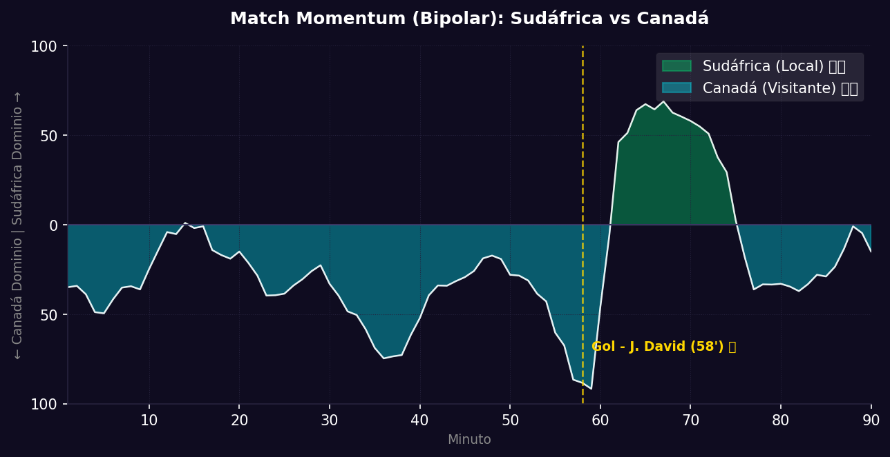

📝 Crónica y Análisis Posterior (Post-Partido)
🔮 GANADOR ACERTADO
⚽ Resumen del Partido (Resultado Real: Sudáfrica 0 - 1 Canadá)
El encuentro de Dieciseisavos de Final concluyó con una ajustada pero merecida victoria para Canadá por 1-0. Tal como se preveía, Sudáfrica plantó una muralla muy tupida en su propio campo, limitando las combinaciones internas del conjunto canadiense. Durante la primera mitad, la posesión abrumadora de Canadá no logró capitalizarse debido a la enorme disciplina de los centrales sudafricanos y a la falta de contundencia en los últimos tres cuartos del campo.
Sin embargo, en el minuto 58', la resistencia de los Bafana Bafana cedió. Alphonso Davies desbordó con potencia por la banda izquierda y mandó un centro preciso al segundo poste, donde Jonathan David se anticipó a su marcador para cabecear cruzado y poner el 1-0 definitivo en el marcador. A partir del gol, Sudáfrica se vio obligada a adelantar líneas e intentó presionar mediante balones largos y saques de esquina ejecutados por Teboho Mokoena, pero el bloque defensivo canadiense mantuvo la calma y neutralizó cada intento aéreo, sellando su boleto a la siguiente ronda del torneo.
🔮 Impacto en la Fase Final (Dieciseisavos) y Proyecciones
- Ajuste del Algoritmo: Para Canadá, esta victoria consolida su capacidad de resiliencia frente a esquemas defensivos de bloque bajo absoluto, elevando su rating de paciencia táctica y organización. Para Sudáfrica, este resultado marca su despedida del Mundial, habiendo dejado una digna presentación defensiva y confirmando la necesidad de desarrollar variantes en la generación de juego ofensivo estructurado.
- Proyección de la Siguiente Fase (Octavos de Final): Canadá se convierte en el primer equipo clasificado a los Octavos de Final, donde se enfrentará a Brasil en una llave que promete ser un festival táctico de alta velocidad y transiciones rápidas.
📈 Análisis del Match Momentum y Match Point (Punto Crítico)
El análisis del Match Momentum describe un dominio extendido de Canadá, que retuvo el control de las acciones durante el 68.2% del tiempo de juego, alcanzando su pico máximo de virulencia ofensiva en el minuto 58', coincidiendo con la anotación de Jonathan David. Sudáfrica, replegada por diseño, tuvo sus mejores picos ofensivos y de posesión entre los minutos 65' y 78', logrando dominar la intensidad de ataque un 18% del tiempo tras verse en desventaja en el marcador, aunque sin la profundidad suficiente para batir el arco canadiense.
El Match Point (Punto Crítico) del partido fue indiscutiblemente la jugada del gol canadiense en el minuto 58'. Antes de la anotación, el planteamiento de Sudáfrica marchaba a la perfección: frustraban la posesión canadiense y mantenían el marcador en cero. La genialidad de Davies por la banda izquierda y la soberbia definición de David desarmaron el cerrojo táctico de los Bafana Bafana, obligándolos a abandonar su zona de confort defensiva y a dejar espacios atrás que permitieron a Canadá controlar el tramo final del partido con comodidad.
Gráfico: Match Momentum (Intensidad de Ataque)

🇿🇦 Sudáfrica: Análisis Táctico
Ventajas
- Solidez Defensiva y Fisicidad: Sudáfrica ha encajado pocos goles en el torneo (solo 3 en fase de grupos). Se agrupan con enorme disciplina en bloque bajo, limitando los espacios entre líneas.
- Peligro en Táctica Fija: Poseen excelentes cabeceadores en jugadas de tiro de esquina y un cobrador de élite en Mokoena, lo cual es su principal recurso ofensiva.
- Intensidad de Recuperación: Su capacidad de resistir embates con disciplina les permite desgastar a sus rivales y forzar imprecisiones en el último tercio.
Desventajas
- Muy Bajo Volumen Ofensivo: Apenas anotaron 2 goles en fase de grupos, mostrando serias carencias cuando deben llevar la iniciativa y construir transiciones complejas.
- Dependencia de Transiciones Simples: Si el rival logra cortar su salida rápida por bandas, el equipo queda sin inventiva creativa en zona de creación.
- Desgaste Físico Prematuro: Su estilo de constante persecución táctica del balón suele mermar sus reservas sobre los minutos finales del partido.
🇨🇦 Canadá: Análisis Táctico
Ventajas
- Ataque Vertical Letal: Canadá cuenta con velocidad de élite con Davies y Buchanan, capaces de desbordar a cualquier bloque lateral.
- Volumen Goleador Alto: Registraron 8 goles en primera ronda, consolidando múltiples alternativas ofensivas en el área con David y Larin.
- Creatividad y Alternancia: Poseen un mediocampo con múltiples líneas de pase y rotación dinámica para desarmar bloques bajos.
Desventajas
- Transiciones Defensivas Frágiles: Al proyectar sus laterales de forma constante al ataque, son vulnerables a contragolpes a la espalda de sus carrileros.
- Baja Efectividad en Disparos: En ocasiones muestran baja contundencia de cara al arco para el volumen de juego generado, desperdiciando ocasiones claras.
- Fragilidad en Juego Aéreo: Sufren en la defensa de tiros de esquina y balones frontales colgados a su área chica.
📊 Pizarras y Gráficos Tácticos
Mapa Defensivo (Sudáfrica)

Mapa Defensivo (Canadá)

Amenaza Esperada xT (Sudáfrica)

Amenaza Esperada xT (Canadá)

Mapa de Calor (Sudáfrica)

Mapa de Calor (Canadá)

Mapa de Tiros (Sudáfrica)

Mapa de Tiros (Canadá)

ADN de Pases (Sudáfrica)

Red de Pases (Canadá)

 Canadá
Canadá